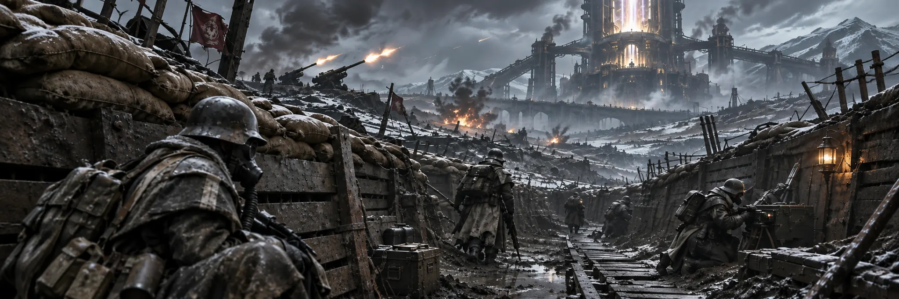
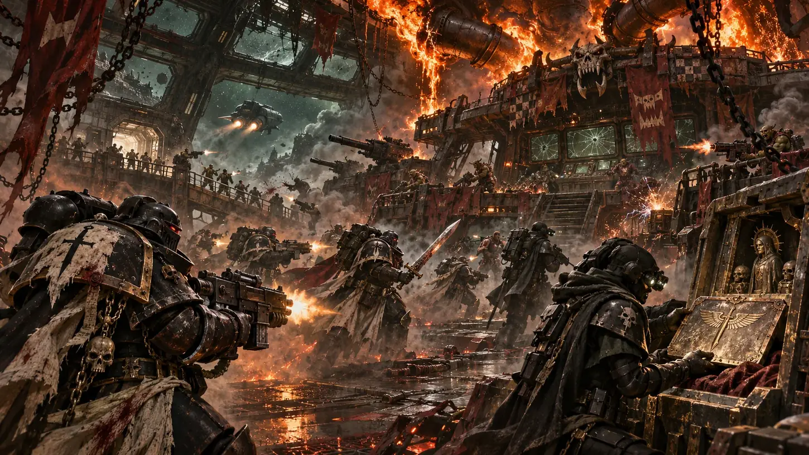
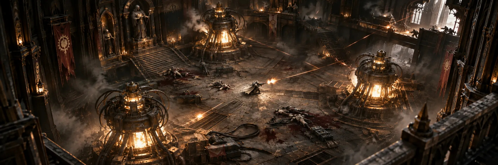
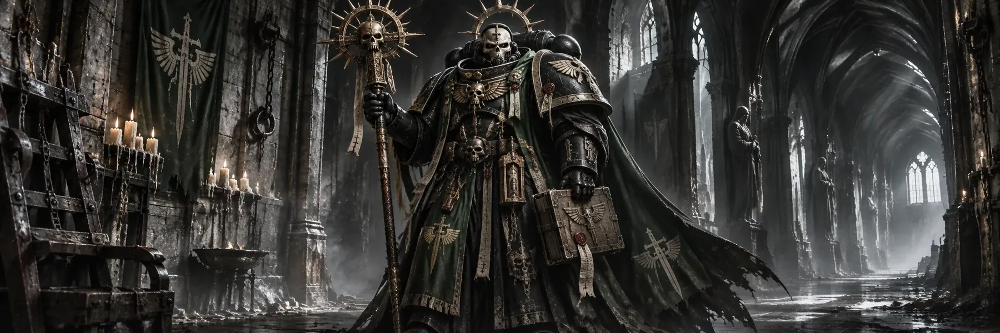
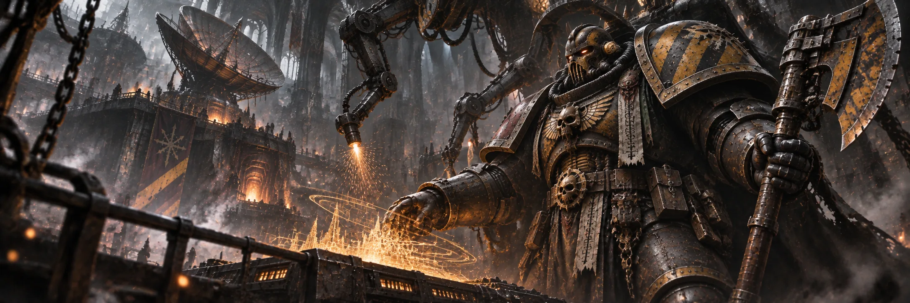
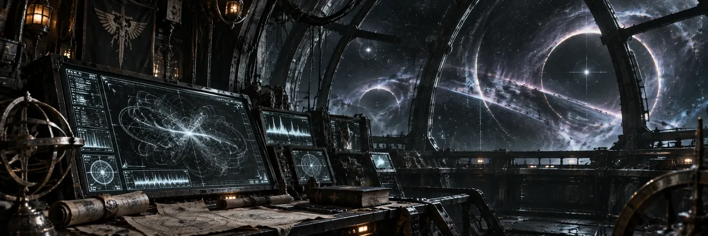

七、他者的战史
灰炉防线：克里格人的撤退令（约850.M41）

〔灰炉北侧阵地·联军通信残片〕
第一夜，克里格人在矿渣里挖了三道战壕。第二道战壕的沙袋被炮风吹散，他们改用碎矿石。费尔萨姆-9送来的图纸没有标出塌陷的地层；一名工兵带着测距仪从废弃排水管道爬出来，另一人没有回来。
〔东侧裂口·出击前〕
灰烬遗忘骑士抵达时，死亡骑兵正在给坐骑戴防护面具。隐修会军官询问东侧能守多久。克里格军官递给他炮兵射击表，上面有弹药、风向和射界，没有预计坚守时间。
第一次冲锋未到达裂口。第二次有七骑穿过烟尘。第三次之后，东侧枪声停止了片刻，隐修会得以进入控制井。
稳定器反转后，主通道塌陷。克里格工兵打开排水支路，灰烬遗忘骑士带着两名受伤的凡人士兵最后通过。
机械教：费尔萨姆-9与两份报告

〔机械教封存报告·850.M41〕
灰炉稳定器：损失。回收数据：不完整。护教军人员：待复核。非登记阿斯塔特基因信号：发现。后续检索权限：拒绝。
〔费尔萨姆-9私人附页〕
费尔萨姆保留了一块已经不能运行的控制板。数年后，他在另一座铸造世界被问及灰炉技术为何没有上缴。他把损毁的控制板放在桌上，回答说：原件留在灰炉。
那名询问者想知道谁下令摧毁原件。费尔萨姆没有给出名字。
隐修会此后曾收到一批无署名的替换轴承。轴承规格恰好适用于余烬号一台老旧的辅机，但货单写的是民用采矿设备。遗迹铁匠没有把这笔货物登记为机械教援助。
更早的另一份机械教失踪舰报告仍存于铸造世界的残缺数据库。探测舰、装置、失踪人员均有记录。希芙拉不在其中。两份报告隔着数千年，保存于不同数据核心，从未合并。
暗黑天使：未签收的移交令

811.M39，《无影之手》。一名被俘的堕天使承认曾向第一军团开火，却拒绝承认另一项指控。暗黑天使要求将他带走。隐修会要求先留下完整证词。
十七分钟里，没有人移动俘虏。两名战士各自打开了武器保险。最后，主团使者将移交令放在桌上，带队离开。
签收处至今空白。
745.M41，暗黑天使抵达格伦霍姆时，静滞舱已经空了。他们在邻近星域搜查了六个月。隐修会在那六个月里停止了外围伤员转运。
〔祸临之地·无署名外围记录〕
三名暗夜骑兵与五名余火守卫焚毁外围中继站，未参与巴尔萨萨率领的第五连主战场行动。一名守卫失联。没有来自第五连的确认回讯。
狮王归来、宽恕部分昔日流散者的战报抵达金穹。伊瑟林让人取出《无影之手》的封印卷。卷宗摆在桌上九天，未被开启。
第十天，奥瑞克送来一张旧金属片：那名俘虏还有证词未录完。 伊瑟林把它压在卷宗上。追迹者已在星海另一端搜寻流散者，隐修会却还握着一份拒绝交出的供词。递交原体复核的文书写好了，航路栏空白。
其他第一军团血脉：四封未寄出的信
赦免天使。 奥瑞克曾是其中一员。他在与钢铁勇士的战斗后被隐修会救下，留下来担任沉渊告解者。某次旧式识别讯号经过余烬号，他认出了赦免天使的编码，却没有要求舰长回讯。舰长仍在航志里写下了他的名字。
复仇天使。 一次共同战区的火力协同记录仅存两页。第一份写“左翼已清”，第二份写“目标已离开”。隐修会的战后档案里，没有被移交的俘虏。双方不交换堕天使情报。
圣骨天使。 一支路过的舰队曾向陌生的阿斯塔特舰只要求确认血统。余烬号关闭了舰桥照明，转入废墟带。对方没有追击。是否识别出第一军团徽记，无从查考。
密教天使。 两次加密讯息送出，均无回讯。第二次发送后，通讯员要求撤回第一封。伊瑟林没有批准。
帝国行政与国教：一支返航的布道舰队
帝国的死亡登记没有被撤销。三支侦查舰队留下了三组不同的希芙拉外围坐标。没有一组能在后来的航图中复现。
753.M41，枢机主教卢修斯·圣言在被干扰的星语阵列前跪了三个小时。舰队随后返航。他在泰拉出版了有关帝皇沉默显圣的著作。
舰长要求购买一本。熔炉祭司拒绝。两个月后，书还是出现在舰上食堂的储物柜里，扉页写着一名凡人厨师的名字。
审判庭：空缺的调查人
〔边境审讯摘录·无署名〕
被问者声称曾见一艘没有帝国登记的阿斯塔特舰只在战区外围回收伤员。审讯者问舰徽。被问者说舰体烧得太黑，看不见。
审讯者继续问，为什么陌生战士没有带走伤员的证词。被问者说，他们把证词交给了伤员本人。
卷宗最后一页是未填的转呈表。没有审判官的签押。
另一份记录中，某审判庭联络官曾要求机械教交出灰炉事故报告。费尔萨姆-9提交了已封存的公开页。此后是否有正式调查，隐修会没有得到消息。余烬号另存一份未署名的舰内航路记录，标有巡逻间隙与档案终端，未记载公开交战。

死亡守望：兽人堡垒内的另一支小队

〔维洛斯·死亡守望战后报告／622.M41〕
斩首任务完成。协同单位身份不明。其撤离方向与我方不同。
黑剑的归航记录只写：外军掩护，未交换呼号。 那块第一军团旧记录板没有出现在死亡守望的缴获清单中。
941.M41，特拉提翁监视站又记下一支拒绝回答的未知单位。该页没有引用维洛斯的战报。


灰骑士：阿格里斯裂谷
灰骑士撤离后，隐修会将参与阿格里斯裂谷行动的人分批隔离。名单没有在两支部队之间交换。奥瑞克为其中一名失乡骑士送回断剑；他没有留下谈话记录。
一名矿道女孩等了很久，才见到随军运送净水和药品、从裂谷归来的父亲。那名凡人运输员记得女儿的名字，却已经不记得她的生日。
〔巡礼骑士军械簿〕
阿格里斯裂谷所留长戟一柄；未授予使用权。封存栏与归还栏的印记不同。
战斗修女：第六个空名

051.M42，熵火神殿的牢笼中关着七名战斗修女。只有一人活着离开，声带已毁。遗迹铁匠找回其中五名失踪者的姓名，另一人只剩一张空白纸。
幸存者没有在希芙拉宣誓加入阿斯塔特战团。她暂住石廊外的疗养区。有人试图给她换上隐修会的灰绿衣袍，她拒绝了，仍穿修补过的修女战甲内衬。
后来一支帝国舰队请求核对修女伤亡名册。隐修会没有回应。幸存者带走的仍是那张空白纸；石廊的“碎律修女”名下另有一册，记录从此处开始领诵的凡人。
灵族：未译出的短讯

M37，井下监听捕获一段不足一秒的回波。信号没有留下可供翻译的语言。记录员在空白栏写：似乎有人路过。
阿历克斯曾要求重新监听同一频段。监听持续了三个标准周，什么也没有收到。
仇敌：不同战争留下的名字
变途者与卡利基努斯。 两次三伪星之战留下烧毁的伪星、失踪的战士和外泄的数据。卡利基努斯两次逃脱。第二次撤离影像里，他说了一个词：回声。

猩红屠戮、无情者克拉能与休伦·黑心的势力。 075.M42的希芙拉突袭由临时混编集群发动。休伦方面提供舰船与兵力；克拉能进入井口区域。隐修会记录他在井口被终结，外部战史中有关其命运的矛盾未消失。交易最后一页被焚毁。


追迹牧师以撒亚。 他属于第一军团血脉，却在隐修会的警戒名单上。塞维林·断索的案卷里留有他的斥责。没有任何一方宣布公开开战。

钢铁勇士与卡拉恩。 黑铁条约后，卡拉恩仍然在逃。Σ-7留在静滞地库；一支失乡骑士小队再未恢复满编。奥瑞克早年遭钢铁勇士囚禁的记录与卡拉恩的战役不在同一年代，石廊没有把两次灾难合成一场复仇。

黑暗机械教与萨拉米斯·熵炎。 熵火神殿的数据库被覆盖，萨拉米斯失踪。那七名战斗修女的牢笼仍保留在战利品清单中，未列作技术成果。

〔未定性接触·两次残缺记录〕
567.M34，一支身份未明的信号在希芙拉外围短暂停留。该页混在灾后失踪者的通讯残本里，呼号栏为空。
941.M41，特拉提翁监视站记录另一支拒绝回答通讯的陌生单位。卷宗没有名称。阿历克斯后来把两张纸放在同一处封存架上，没将它们订在一起。
